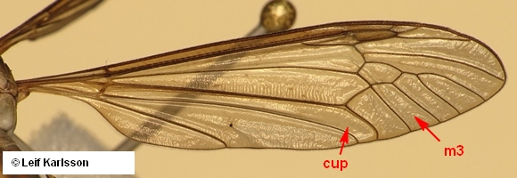
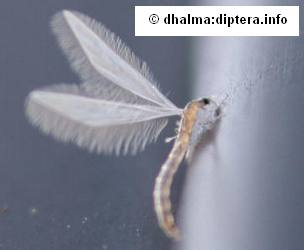
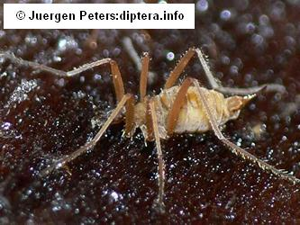
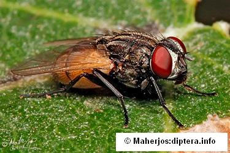
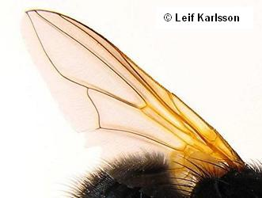
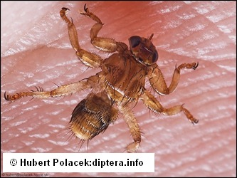
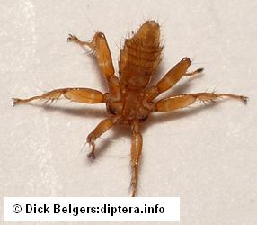
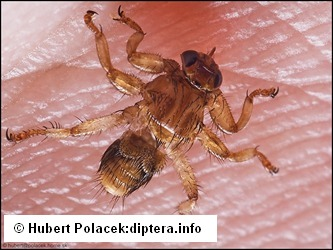
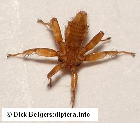

Key to suborders of Diptera
1.
- Antennae usually long, with scape and pedicel and 6 or more uniform (more or less) flagellomeres. Palpi usually with 3-5 segments.


2
- Antennal flagellum usually consolidated into a single compound segment typically bearing a terminal to dorsal stylus
or arista, usually less than 6 flagellomeres. Palpi usually with 1 or 2 segments.


3
- Antennal flagellum not pectinate. Cells m3 and cup open to wing margin.

Nematocera
- Antennal flagellum strikingly pectinate. Cells m3 and cup closed before wing margin.

Brachycera
Rachericidae
- Wing extremely narrow, with greatly reduced venation and extraordinarily long fringes or wingless
slender flies with abdomen about 3 times as long as remainder of body.



Nematocera
- Wing broader with more complete venation or wingless with abdomen less than twice as long as remainder of body.


 



Brachycera